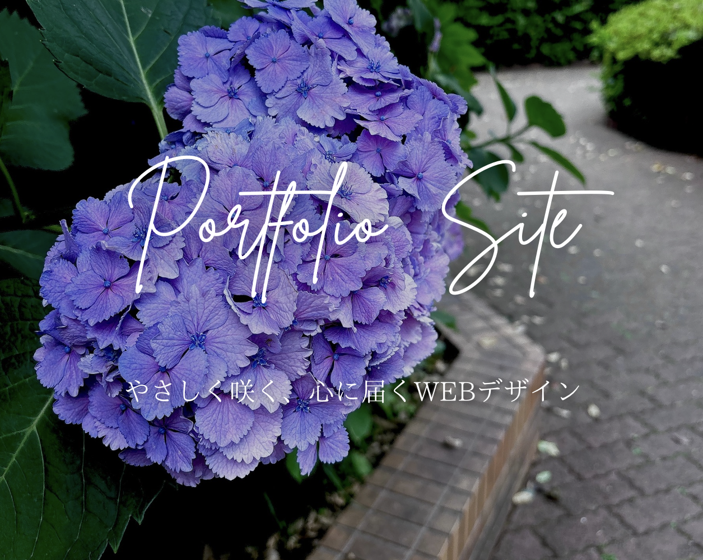

ポートフォリオサイト
就職活動にあたり、自分のスキルや制作実績を整理・発信する場として、
本ポートフォリオサイトを制作しました。
デザインテーマは誕生花でもある「紫陽花」。
水色を基調とした柔らかな配色と、
余白を生かしたレイアウトにより、静けさや儚さを感じられる世界観を意識しています。
HTML / CSS を用いた静的サイトとして構築し、
モバイルにも対応したレスポンシブデザインを実装。
トップページには、作品紹介スライダーやアニメーション演出を取り入れ、
やさしく印象に残る導線を目指しました。
デザイン・コーディングともに、ひとつひとつの要素に意味を持たせ、
「伝わる」「見やすい」構成を心がけています。
今後の展望
- アニメーションやスクロール演出をさらに洗練し、印象に残る体験型サイトを目指す。
- 現在は日記アプリや静的ページ中心だが、今後は
→日記アプリの改修
→フロント＆バックエンド連携
など、より実務に近い構成の作品を追加していく予定。 - FigmaやSTUDIO、Canvaなどを用いて、より洗練されたビジュアル設計力を磨きたい。
また、色彩設計・フォント・余白設計など、「伝わるデザイン」を構成できる力を育てていく。
アプリ概要
- 使用技術：HTML / CSS / Visual Studio Code / Canva
- テーマ：紫陽花、水色、儚さ
- 特徴：レスポンシブ対応、やさしいアニメーション、静的構成
- 制作期間：約10日